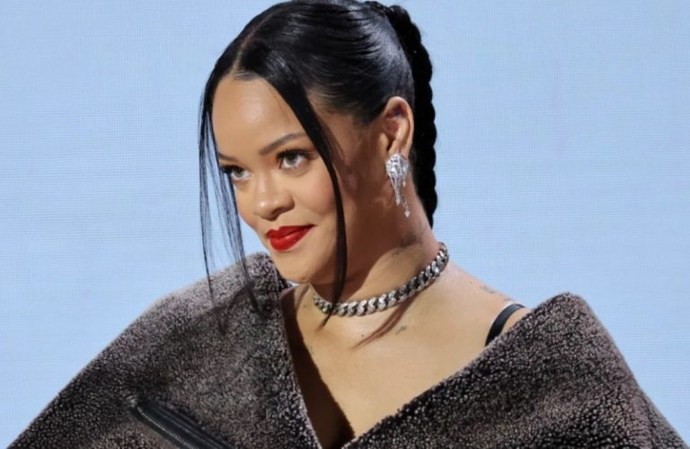

Bruno Mars nastavlja dominirati glazbenom scenom s nizom uspješnih suradnji koje su osvojile svjetske ljestvice i streaming platforme.Ističe se pjesmama poput die witha smile i APT
Lady Gaga se vratila na glazbenu scenu s velikim uspjehom, objavivši svoj sedmi studijski album Mayhem. Ovaj album označava povratak njezinim pop korijenima, kombinirajući plesne ritmove s introspektivnim tekstovima, čime je ponovno osvojila publiku diljem svijeta.Najpoznatija pjesma albuma jeAbracadabra
Izdanjem svog šestog studijskog albuma Hurry Up Tomorrow. Ovaj album označava završetak trilogije započete s After Hours (2020.) i Dawn FM (2022.), te predstavlja introspektivno putovanje kroz teme slave, identiteta i osobne transformacije. Najpoznatiji hitovi su cry for me i Wake me up
Svojim trećim studijskim albumom Hit Me Hard and Soft, koji je objavljen 17. svibnja 2024. nastavlja dominirati glazbenom scenom. Album je donio deset novih pjesama koje istražuju teme identiteta, ranjivosti i osobnog rasta, a Eilish ga je producirala zajedno sa svojim bratom Finneasom. Poznatije pjesme su Lunch i Birds of a feather
Rihanna se 2025. godine vraća na glazbenu scenu s novim singlom Friend of mine, koji je objavljen 16. svibnja kao dio soundtracka za nadolazeći animirani film "Štrumpfovi", u kojem posuđuje glas Štrumpfeti i sudjeluje kao producentica
